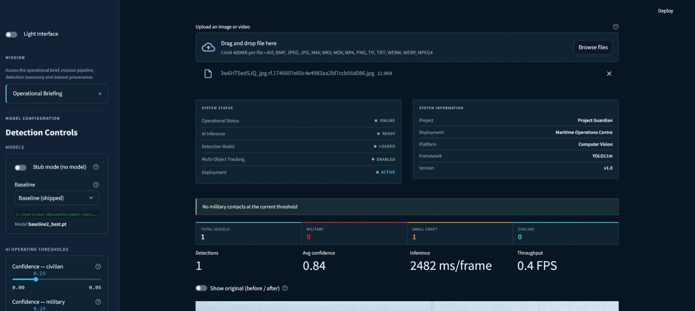
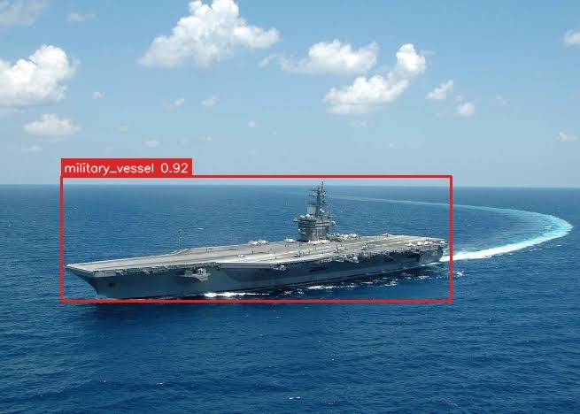
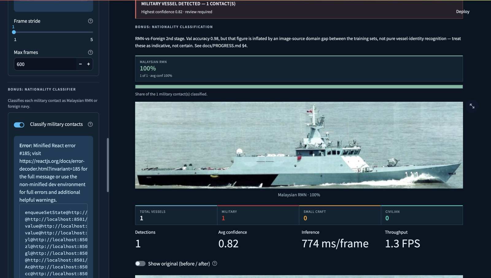
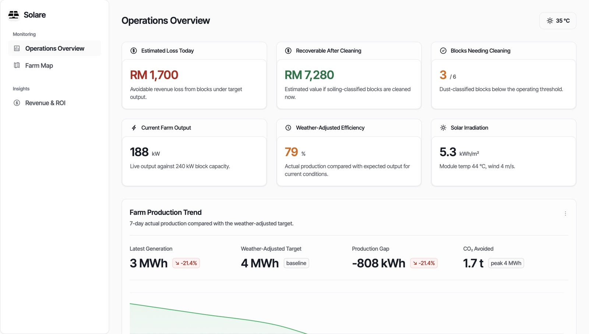
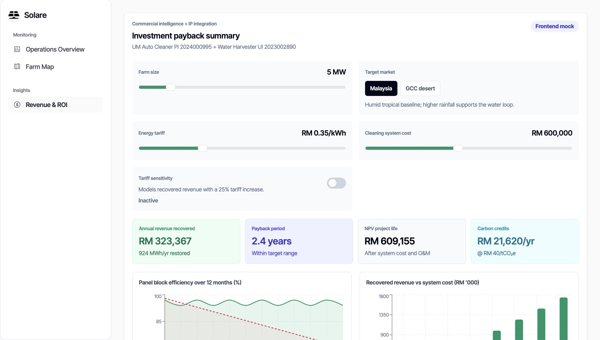
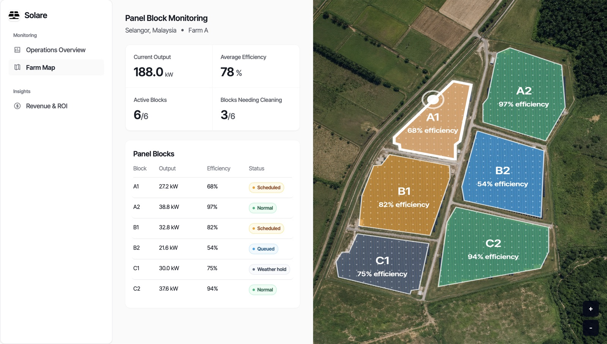

SEDIC Hackathon 2026
Semi-Finalist
Est. Kuala Lumpur
Software Engineer — learning by building
A software engineering student who learns by building. I fill my time with personal projects and hackathons — shipping small, real systems and using AI to learn faster as I go — including a live delivery-tracking platform in production and self-redeploying ML pipelines.
About

I'm a first-year software engineering student at Universiti Malaya, currently holding a 3.81 CGPA. I learn by building: personal projects and hackathons, shipping small, real systems and using AI to learn faster as I go.
I'm early in the journey and focused on gaining experience, new skills and certifications — and on shipping the smallest thing that survives real use. Open to internships.
Selected work
Maritime vessel detection from imagery, built at the SEDIC Hackathon 2026 on a YOLO detection pipeline.



Solar-farm monitoring that flags soiled panel blocks and puts a ringgit figure on cleaning them, built at the UM Deep Tech Hackathon.



These are the highlights — the rest of my projects live on GitHub.
Recognition
Semi-Finalist
Consolation Prize & Best Presentation
Top 10
Semi-Finalist
Credentials
Earned
Earned
In progress
In progress
Toolkit